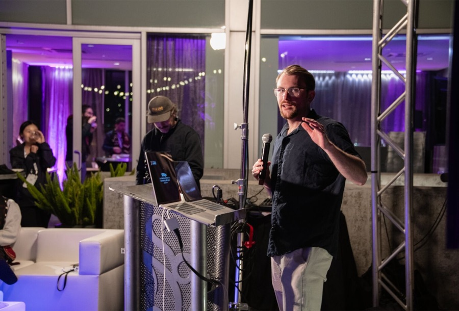

Jackson Clark: PhD candidate at UIUC building SREGym, a benchmark for AI SRE agents.

- name
- Jackson Clark
- role
- PhD Candidate, 3rd year
- org
- Siebel School of Computing & Data Science, UIUC
- advisor
- Tianyin Xu
- building
- SREGym
- focus
- AI for SRE, systems reliability, post-training & RL, evals
- jclark58@illinois.edu
I'm a third year PhD candidate in the Siebel School of Computing and Data Science at the University of Illinois Urbana-Champaign (UIUC). I am "watched" by my advisor Tianyin Xu.
I'm currently building SREGym to see if AI can resolve production incidents. SREGym is part of Laude Slingshots // TWO. See my interview with Andy Konwinski and a brief demo.
My research explores practical AI and agent techniques for safety-critical computer systems and infrastructures. My current work is in the AIOps space, specifically in AI for Site Reliability Engineering (SRE). Previously, I collaborated with Microsoft Research and IBM Research to build LLM benchmarks (AIOpsLab, ITBench) and agents (STRATUS) for SRE.
In the past, I worked at NASA in the Space Technology Mission Directorate, where I helped develop space systems for the International Space Station. I'm also an instructor at the Discovery Partners Institute at the University of Illinois, where I teach a professional development class on Data Science to CPS high school teachers.
- 2026-09PAPERSREGym accepted to NeurIPS 2026. See you in Sydney! 🇦🇺
- 2026-06NEWJoined Bespoke Labs to build RL environments for SRE.
- 2026-05PASSPassed my PhD qualifying exam.
- 2026-05NEWReleased the SREGym paper on arXiv.
- 2026-04PAPERSREGym accepted to the CAIS 2026 Demo Track.
- 2025-10GRANTAwarded a Laude Institute Slingshot grant for SREGym.
- 2025-09PAPERSTRATUS accepted to NeurIPS 2025.
- 2025-05ORALITBench selected for Oral Presentation (Top 1%) at ICML 2025.
- 2024-08INITStarted my PhD at the Siebel School of Computing and Data Science, UIUC.
-
NeurIPS 2026
SREGym: A Live Benchmark for AI SRE Agents with High-Fidelity Failure Scenariospdf site
bibtex
@article{clark:arxiv:26, author = {Jackson Clark and Yiming Su and Saad Mohammad Rafid Pial and Yifang Tian and Lily Gniedziejko and Hans-Arno Jacobsen and Yinfang Chen and Tianyin Xu}, title = {{SREGym: A Live Benchmark for AI SRE Agents with High-Fidelity Failure Scenarios}}, journal = {arXiv:2605.07161}, year = {2026}, month = may, eprint = {2605.07161}, archivePrefix = {arXiv} } -
CAIS 2026 · Demo
SREGym: A Live Training Ground for AI SRE Agents with High-Fidelity Failure Drills
-
NeurIPS 2025
STRATUS: A Multi-agent System for Autonomous Reliability Engineering of Modern Cloudspdf arxiv
bibtex
@inproceedings{chen2025stratus, title = {{STRATUS}: A Multi-agent System for Autonomous Reliability Engineering of Modern Clouds}, author = {Chen, Yinfang and Pan, Jiaqi and Clark, Jackson and Su, Yiming and Zheutlin, Noah and Bhavya, Bhavya and Arora, Rohan and Deng, Yu and Jha, Saurabh and Xu, Tianyin}, booktitle = {Advances in Neural Information Processing Systems (NeurIPS)}, year = {2025}, eprint = {2506.02009}, archivePrefix = {arXiv}, primaryClass = {cs.DC} } -
ICML 2025
ORAL · TOP 1%
ITBench: Evaluating AI Agents across Diverse Real-World IT Automation Taskspdf arxiv
bibtex
@inproceedings{jha2025itbench, title = {{ITBench}: Evaluating {AI} Agents across Diverse Real-World {IT} Automation Tasks}, author = {Jha, Saurabh and Arora, Rohan and Watanabe, Yuji and Yanagawa, Takumi and Chen, Yinfang and Clark, Jackson and others}, booktitle = {Proceedings of the 42nd International Conference on Machine Learning (ICML)}, year = {2025}, address = {Vancouver, Canada}, note = {Oral Presentation (Top 1\%)} }
- SREGym — Microsoft Research, System Intelligence Seminar. Spring 2026
- STRATUS — University of Toronto, ECE1770. Hosted by Yifang Tian and Hans-Arno Jacobsen. Mar 2026
# I've been giving many tutorials on AIOps and SRE agent research.
- An open platform for AI-driven systems research on cloud system management (ITBench Tutorial) — SOSP 2025
- Benchmarking of AI Agents for IT Automation Tasks using ITBench — DSN 2025
- AIOpsLab in Action: An Open Platform for AIOps Research — FSE 2025
- Benchmarking of AI Agents for IT Automation Tasks using ITBench — IIDAI Workshop Spring 2025
- Saad Mohammad Rafid Pial — Research intern at UIUC (BSc, BUET). Working on AI for SRE and cloud reliability.
- Lily Gniedziejko — Undergraduate, Computer Science, UIUC.
- Catalyst Grant from Cohere — 2026
- Slingshot Grant from Laude Institute for SREGym — 2025
- OSDI 2025 Artifact Evaluation
-
Bespoke Labs · Building RL Environments for SREJun 2026 – now
Building reinforcement learning environments for Site Reliability Engineering.
-
xlab, UIUC · Graduate Research AssistantFall 2024 – now
Co-authored STRATUS, an LLM-based multi-agent system for autonomous SRE that formalizes a Transactional Non-Regression (TNR) safety specification and shows 1.5–5.4× improvement over state-of-the-art AI SRE agents on AIOpsLab and ITBench. Lead maintainer of AIOpsLab (700+ GitHub stars), co-author of ITBench with IBM. Build microservice testbeds, eBPF-based chaos engineering, Kubernetes workload orchestration, and LLM-driven fault diagnosis pipelines on Prometheus / Jaeger / OpenTelemetry stacks.
-
NASA Marshall · Software Engineer Intern, HOSCSummer 2023
Built a C++ forward error correction library (BCH, LDPC, convolutional codes) to CCSDS standards for the GPDM mission and contributed automation tools supporting flight controllers. Huntsville, AL
-
NASA Ames · Research Intern, Intelligent Systems DivisionSummer 2023
Led reinforcement learning research for multi-agent pathfinding (MAPF) in urban air traffic management using PyTorch / TensorFlow on a supercomputing cluster. Mountain View, CA (remote)
-
NASA Goddard · Software Engineer & Data Science Intern, HEASARCFall 2022 – Spring 2023
Trained ML models to classify neutron star spectra from NICER payload data; redesigned SkyView, a React + Flask catalog for querying astrophysics datasets by sky position. Greenbelt, MD (remote)
-
NASA Marshall · Software Engineer Intern, POICSummer 2022
Designed an automation tool for ISS flight controllers to streamline timeline change processes. Huntsville, AL
-
Freelance · Software EngineerSep 2020 – Sep 2023
Earned $60k+ on Upwork shipping cross-platform apps in Electron.js, React, and Express; managed full client lifecycle from proposal to delivery.
-
RoboThink · Software EngineerJun 2018 – Sep 2020
Lead developer for RoboThink's educational tools built with Electron.js and React.
- Instructor, Discovery Partners Institute, University of Illinois. Designed and taught a two-week Data Science Intensive for Chicago Public School teachers so they can build their own data science lessons. Summer 2024, 2025, 2026
- Course Assistant, Data Science Discovery (CS 107), UIUC. Spring 2023 – Spring 2024
- Ph.D. Computer Science, University of Illinois Urbana-Champaign — 2024–?
- B.S. Data Science, University of Illinois Urbana-Champaign — 2020–2024